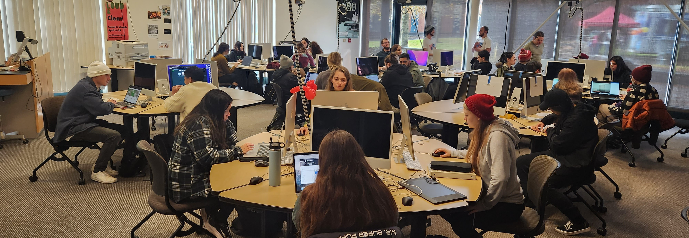

Structure
The Senior Seminar isn’t like other classes you’ve taken in the program up to this point. The Seminar is intended to give you experience working in teams on a single large project over the semester. Based on your Superpower and interests you will be on a team with others focusing on a specific area of the project.
Some examples of past projects include designing mobile and web applications for local businesses, restoring electronic literature artifacts, and creating virtual and augmented reality experiences.
In the Seminar, there will be an instructor like in a regular class, but there will also be a student project manager who is responsible for managing the project. Within your teams, you will have a team leader who reports to the project manager, just like in a real work environment. Just like in a real work environment you also keep track of your time using a timesheet in the seminar. The minimum expectation is 150 hours of work over the 16-week semester.
(Aside: Don’t be scared by the hour count! 150 hours over a 16-week semester means an average of fewer than 10 hours a week. This includes things like class time (3 hours), weekly team meetings (1 hour), and workshops (1 hour). That means just by attending classes, meetings, and workshops you can fulfill half your weekly time requirement!)
Here is a sample schedule to give an idea of how the course is paced:
Weeks 1 - 6
The first part of the semester revolves around planning, designing, and evaluating your approach to accomplishing your project goal. After this planning stage, you make a presentation to your client with your proposal of the plan to complete the work. Once they approve your proposal, you get to work!
Weeks 7 - 14
The second part of the semester is following through on your plan in the proposal. This work looks very different for each of the teams. We’ll go through a breakdown of what that work looks like in the next section. In this part of the semester, the work you are doing is meant to emulate a professional environment where there are different teams with areas of responsibility.
Weeks 15 - 16
In the finals weeks of the semester, you will work on putting the finishing touches on your project and assembling your final presentation to your client. This final presentation will cover what you set out to accomplish and create and what you accomplished. Sometimes it happens that a seminar doesn’t finish their project in the semester, and that’s okay! The class is about learning and gaining experience. In the real world, projects can change focus based on time constraints and deadlines and that can happen in the seminar too.
What Do You Do, Make, & Learn?
Here are some examples from the Fall 2022 Senior Seminar
Do
The Fall 2022 Seminar worked on restoring and preserving a seminal piece of electronic literature, Uncle Buddy’s Phantom Funhouse by John McDaid. Funhouse was a pioneering work at the time including an early example of something like Google Earth, way before Google was even founded. (Aside: Electronic literature is a genre of media that is most associated with the late 1980s to early 1990s creative works that used digital technology to push the boundaries of literature.)
Make
In the Fall 2022 Seminar the students presented their proposal to John in person, giving an overview of the design elements such as color palette, typography, mood, website and game wireframes, trailer and video assets to be produced, and a social media promotion strategy. These are all elements that a professional design firm would include in a proposal to a client.
Learn
Working and communicating in teams is an essential aspect of the modern digital workplace and the seminar will provide many opportunities to build those skills including participating in weekly planning meetings, and collaborating with members of other teams, all while building the skills in your superpower.
Teams
There were four teams for the project:
- Multimedia Design
- Motion Graphics and 3D Modeling
- Web Development
- Social Media/Promotion
Each team consisted of individuals with skills and interests that align with their team's role. Here are a sampling of the teams and the work their members did.
Multimedia Design:
Worked on creating the aesthetic design and visuals for the project. This included selecting color palettes, and typefaces, creating a mood board to capture the general feel of the project and creating hundreds of art assets to match that aesthetic to produce a cohesive visual design.
Motion Graphics and 3D Modeling:
Worked to create videos, animations, and 3D models as assets for the project. Their work included making a trailer to promote the project, restoring video assets that couldn’t be included in the original project due to technical constraints, and creating 3D models to bring more detail and life to other parts of the game.
Web Development:
Worked to create two websites, the Archival Site which is a resource for information about Uncle Buddy’s Phantom Funhouse, and a site for the game itself. The process of designing the sites included analysis to evaluate the functionality of the original artifact, work on User Interface/User Experience (UI/UX) to design the interface and interactions, and development work to implement all of those features.
Social Media/Promotion:
Worked to design and carry out a social media strategy to promote the work our teams were doing. This included research on platforms and audiences to promote to, creating strategies to reach audiences on those platforms, and producing promotional content such as Tweets, Reddit posts, and TikToks.
These different specialty areas worked in their teams to develop a production plan to produce the content for their section promptly. Because each Seminar’s project is different there are a lot of decisions to be made and creative problem-solving that won’t be covered in the syllabus. The intent of the Seminar is to build teamwork and collaboration skills that
What Team Will You Be On?
Your superpower reflects on what team you’re on. You will be a part of one of the four teams based on what you believe your work is best in. Each person is stronger at doing certain things so even on your team you will be doing something different than anyone else. The program focuses on six areas of study:
- Web Design & Development
- 2D & 3D Animation for Simulation and Visualization
- Digital Publishing
- Physical Computing & Virtual Reality
- Social Media / SEO for Digital Marketing
- Game Studies & Design
From that, the senior seminar narrows it down to teams based on specialties. The number, composition, and role of the teams change based on the project for that semester. The teams for the Fall 2022 Seminar were:
- Multimedia Design
- Motion Graphics and 3D Modeling
- Web Development
- Social Media/Promotion
In order to end up in one of these teams, you’ll take the Superpower quiz/survey (https://dtc-wsuv.org/supersurvey/) for the program head, Dene, to see what group is best for you and who your mentor should be for the seminar.
Past Projects
(https://dtc-wsuv.org/projects/)
The Creative Media and Digital Culture (CMDC) program were created in 1997 and then the name was changed to Digital Technology and Culture (DTC) in 2003. Since then there have been several projects seniors have worked on. Examples include:
- Amnesia Restored (restoration of the 1986 game)
- Clark County Historical Museum (Informational website)
- FISH Vancouver (Update and improve website)
- Kaegi Pharmacy Gig Site (VR and AR look at a historical location)
- King of Space (a new version of the old 1991 game)
- Parks for Clark (reimagining and rebranding website)
- Unfolding Gig Site (AR building game, based on historic Vancouver, WA)
Resume and Portfolio
In the senior seminar along with working on a team project, you will be asked to create a resume and portfolio. First comes the resume and then the portfolio. Even though you might already have a resume and portfolio you will be asked to create a new one.
Your resume will start off with an inventory, where you gather any and all projects you have done in the program that relates to your superpower. From there you will then create a draft resume this will include
- Name, superpower, location and contact, portfolio website
- Education
- Certificates/honors
- Skills
- Professional experience (yes you do include the senior seminar project on this)
- Other work experience
Once this gets approved you will begin working on your “pretty” resume. This needs to be only one page, it can not be more. When creating that you will also be asked to create a “scannable” copy for when applying to jobs online. The scannable copy can be longer than a single page, but will only contain text so automated systems can scan it.
Once your resume is done you will move on to your portfolio. Even if you already have a portfolio you will be asked to create a new one or at the very least revamp your previous work. This portfolio will include:
- Information about you
- Examples of work you have done
- Resume
- Contact information